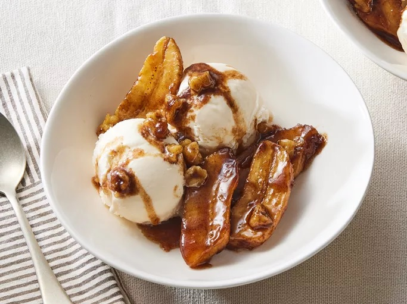

Banana Foster
What Is Bananas Foster?
Bananas foster is a dessert consisting of sliced bananas and a rum sauce
served over vanilla ice cream. It originated in New Orleans and is often
prepared tableside in restaurants as a flambé (a cooking technique in which
alcohol is added to a hot pan, creating flames).
Bananas Foster Ingredients

These are the ingredients you'll need to make this restaurant-worthy bananas
foster recipe:
· Butter: This decadent bananas foster recipe starts with
butter melted in a skillet.
· Brown sugar Dark brown sugar gives the dessert a rich and
complex sweetness.
· Rum: Use your favorite dark rum for this boozy treat.
· Vanilla: Vanilla extract enhances the overall flavor of
this bananas foster recipe.
· Cinnamon: Ground cinnamon lends a warm and cozy
flavor.
· Bananas: Of course, you'll need bananas!
· Walnuts: Coarsely chopped walnuts add nutty flavor and
welcome crunch.
· Ice cream: Use store-bought or homemade vanilla ice
cream.
Homepage